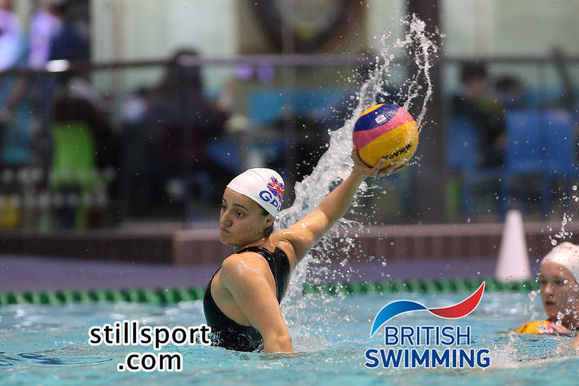
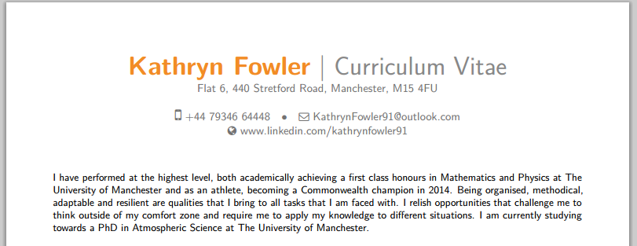

Who?
My name in Kathryn Fowler. I'm studying towards a PhD in Atmospheric Science at the University of Manchester as part of the Earth, Oceans and Atmospheres DTP, supported by the Natural Environment Research Council.
Recent work |
The article entitled Maxwell-Stefan diffusion: a framework for predicting condensed phase diffusion and phase separation in atmospheric aerosol is currently under review. |
Education |
PhD Atmospheric Science / The University of Manchester / 2015 - present |
| MMath and MPhys, First class honors / The University of Manchester / 2010 - 2015 | |
| A levels / Sutton Coldfield Grammar School for Girls / 2008 - 2010 | |
Experience |
Teaching assistant at The University of Manchester (September 2015 - Present) |
| Water Polo coach at The University of Manchester (September 2015 - Present) | |
| Athlete at British Swimming (December 2012 - December 2014) | |
Additional skills |
Proficient in the programming languages of Matlab, Python, HTML and CSS, and always looking to improve. |
| Qulaified grade D water polo referee |
What do I do?
Good question.
I study the tiny particles in the atmosphere known as aerosol particles. Aerosol particles act as centres of condensation and are essential in the formation of clouds. I use computer models to investigate how changes in aerosol properties affects the activation of cloud droplets and ice crystal.
I started my PhD by modelling condensed phase diffusion through aerosol particles. Through the paper Maxwell-Stefan diffusion: a framework for predicting condensed phase diffusion and phase separation in atmospheric aerosol, we introduced a new framework to investigate how the interplay between viscosity and solubility can affect equilibration rates within aerosol particles.
The next stage of the project is to investigate how the composition of aerosol particles affects the activation of cloud particles.
Why?
I love a challenge, whether it is a mental or physical one. Sport has always given me a way to use up all my energy, while allowing me to really focus when it came to academic studies. For me, I could not have done one without the other. Both of these aspects of my life have given me so many opportunities. So why do I do what I do? - "Why not?".
What have I been up to?
There are definitely two sides to me. There's 9-5 (more like 10-6ish) me, who loves to be challenged academically. I just want to understand why things happen. And if there is an equation to solve, my day is made. Catch up with what the PhD student in me has been upto by following @KathrynFowler91.
The otherside to me is the former international water polo player who just can't seem to stop. There have been times when I've fallen out of love with sport, but I always find myself going back for the next challenge. Maybe the to sides to me are not so different. Still playing in the British National League for Liverpool Lizards and when I can find the time referee some junior tournements. This side tweets as @SpeedyFowler91.
Where has life taken me?
At the moment, you are likely to find me in the office sat at a computer, pulling my hair out over a Matlab related problem. The next best bet is the gym or pool, then somewhere with food and then bed, in that order.
I've been based at the University of Manchester since 2010 when I came for undergraduate study. However, after the 2013 world championships in Barcelona, an offer to play in Madrid for La Latina was on the table. I'm not one to turn down an opportunity and two weeks later I was on my way to Madrid-Barajas International Airport.
Living in the magical city that is Madrid has fueled an ambition to not just see the world, but experience it. Water polo and now the PhD, has given the opportunity to travel and visit some incredible places.
Even more?
One last thing, my CV. For a more specific CV, academic or sporting, email KathrynFowler91@outlook.com.
